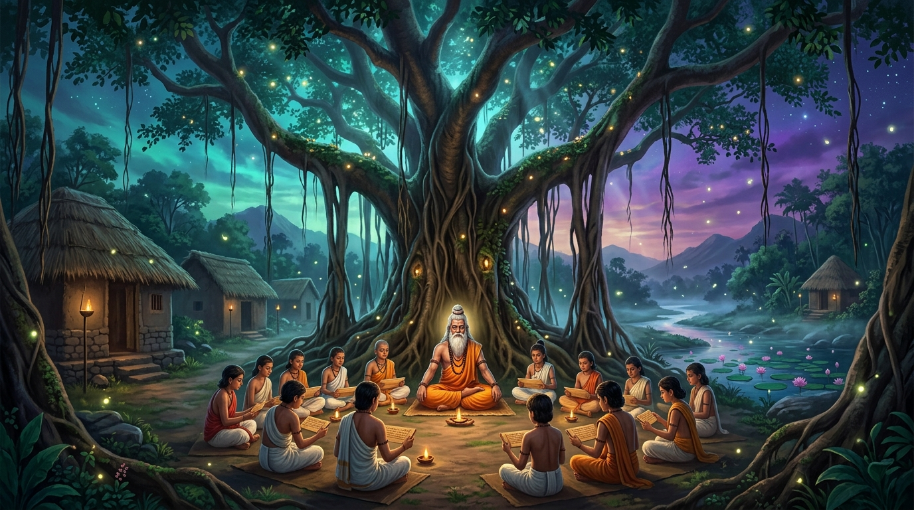

7 ஆசிரமப் பாடநூல்கள் மின்னூல் அரங்கம் • SACRED DIGITAL READER
7 ஆசிரமப் பாடநூல்கள் — முழுமையான மின்னூல் களஞ்சியம்
நன்னெறி, நல்லறம், நல்வழி, நற்துணை, நற்சிந்தனை, நற்சொல், நற்செயல் ஆகிய 7 நூல்களும் தரம் 1 முதல் 12 வரை தலா 7 அத்தியாயங்களுடன் (மொத்தம் 588 அத்தியாயங்கள்) விரிவாக இங்கு வாசிக்கக் கிடைக்கின்றன.

வகுப்பைத் தேர்வு செய்க (Select Grade):
7 ஆசிரம நூல்கள் (The 7 Sacred Books)
நூலைத் தேர்வு செய்து அதிலுள்ள 7 அத்தியாயங்களை வாசிக்கலாம்